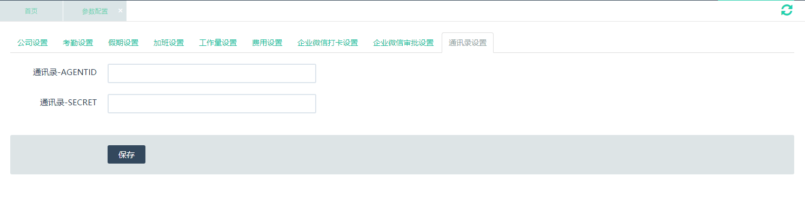

从功能菜单设置→参数配置，打开页面之后选择“考勤设置”面板，可设置企业考勤时间及考勤规则。
| 序号 | 名称 | 默认值 | 说明 |
| 1 | 上午上班时间 | 08:28:00 | 上午上班考勤时间 |
| 2 | 上午下班时间 | 12:00:00 | 上午下班考勤时间 |
| 3 | 下午上班时间 | 13:00:00 | 下午上班考勤时间 |
| 4 | 下午下班时间 | 18:30:00 | 下午下班考勤时间 |
| 5 | 迟到累计 | 迟到累计30分钟等于0.5天无效出勤 | 迟到累计超过设置的分钟数，折算成无效出勤天数，月末扣除相应的调休。 |
| 6 | 早退累计 | 早退累计30分钟等于0.5天无效出勤 | 早退累计超过设置的分钟数，折算成无效出勤天数，月末扣除相应的调休。 |
| 7 | 旷工一天算无效出勤3天 | 旷工一天算无效出勤3天 | 旷工产生的无效出勤天数可根据企业规定自行调整。 |
| 8 | 无效出勤一次扣除调休 | 无效出勤一次扣除调休1天 | 无效出勤扣除的调休天数可根据企业规定自行调整。 |
| 9 | 外勤超过天数审批 | 外勤超过1天给审批人审批 | 外勤天数超过设置天数，需要审批人进行审批。 |
从功能菜单设置→参数配置，打开页面之后选择“考勤设置”面板，可设置企业考勤时间及考勤规则。
| 序号 | 名称 | 默认值 | 说明 |
| 1 | 请假规则 | 请假3小时扣0.5天调休 | 请假超过设置的小时数，折算成调休天数，月末扣除相应的调休。 |
| 2 | 请假审批 | 请假超过5天给审批人审批 | 请假天数超过设置天数，需要审批人进行审批。 |
| 3 | 是否有限制 | 是 | |
| 4 | 请假小于小时数 | 请假小于3小时一律算作没请假 | 请假小于设置的小时数，不算作请假。 |
从功能菜单设置→参数配置，打开页面之后选择“加班设置”面板，可设置企业加班规则。
| 序号 | 名称 | 默认值 | 说明 |
| 1 | 加班时长 | 加班时长超过3小时，算调休0.5天，获得餐补20元 | 加班超过设置的小时数，折算成调休天数，增加相应的调休。 |
| 2 | 是否有上限 | 是 | 加班上限限制 |
| 3 | 加班餐补 | 加班超出6小时，一律算调休1天，获得餐补40元 | 加班获得的餐饮补贴，按加班次数计算，餐补金额可根据企业规定自行调整。 |
从功能菜单设置→参数配置，打开页面之后选择“工作量设置”面板，可设置企业工作量规则。
| 序号 | 名称 | 默认值 | 说明 |
| 1 | 工作量设置 | 1天的工作时长为8小时 | 企业根据出勤时间自行调整工作时长。添加工作量会以该时长作为当天工作量的总时长。 |
| 2 | 是否有上限 | 是 | 加班上限限制 |
| 3 | 加班餐补 | 加班超出6小时，一律算调休1天，获得餐补40元 | 加班获得的餐饮补贴，按加班次数计算，餐补金额可根据企业规定自行调整。 |
从功能菜单设置→参数配置，打开页面之后选择“费用设置”面板，可设置企业费用相关规则。包括采购相关的支付类型。
| 序号 | 名称 | 默认值 | 说明 |
| 1 | 使用默认奖金公式 | 否 | 选择是否使用默认奖金公式，如果选择是会提示：不使用默认公式的情况下，奖金需手动填写。 |
| 2 | 默认经理奖金公式（选择使用默认奖金公式） | 经理奖金公式 | |
| 3 | 默认实际奖金公式（选择使用默认奖金公式） | 实际奖金公式 | |
| 4 | 默认预算奖金公式（选择使用默认奖金公式） | 预算奖金公式 | |
| 5 | 工资默认发放日 | 企业根据自身规定设置工资的发放日期。 | |
| 6 | 最低扣款系数 | 因各种情况需要扣除员工部分工资，设置扣除金额上限。 | |
| 7 | 个税起征点 | 国家规定的个税起征点。如规定有变化，重新设置金额。员工工资的个税金额会发生相应变化。 | |
| 8 | 支付类型 | 支付要用到的相关类型，已有常用类型，如需要添加则在新增中添支付类型。 |
设置企业微信打卡参数之后，小睿办公可自动同步企业微信中的打卡数据，作为小睿办公的员工出勤记录。
从功能菜单设置→参数配置，打开页面之后选择“企业微信打卡设置”面板，可设置企业微信打卡参数。
获取企业微信打卡参数的方法：
设置企业微信审批参数之后，小睿办公可自动从企业微信同步直接在企业微信中进行的审批流程，导入小睿办公的审批流程。
从功能菜单设置→参数配置，打开页面之后选择“企业微信审批设置”面板，可设置企业微信审批参数。
获取企业微信审批参数的方法：
【企业微信管理后台】选择管理工具，选择通讯录同步。
【企业微信管理后台】获取数据并填写到通讯录设置中。
从功能菜单设置→参数配置，打开页面之后选择“交通补贴设置”面板，可设置交通补贴参数。
| 序号 | 名称 | 默认值 | 说明 |
| 1 | 交通补贴设置 | 交通补贴分为全勤和非全勤两种，两种状态的补贴基数不同，可根据企业规定自行调整。 |